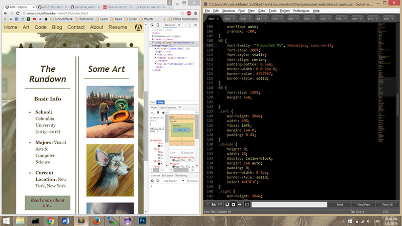
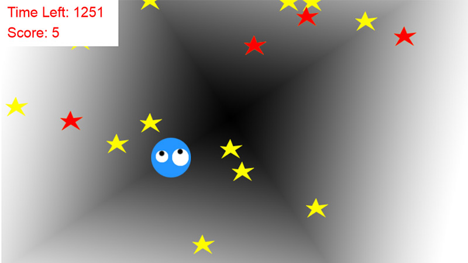

<!--$tab-->
Code
<!--$mainTitle-->
On My Laptop
<!--$subtitle-->
Samples of programs and projects.
<!--$STARTcontent-->
    <div id="scrolling">
        <h2>Coding Portfolio</h2>
        <h3>Personal Website Version 1</h3>
        <div class="art_box" onmouseover="toggleTitle(this)" onmouseout="toggleTitle(this)">
            
            <span class="hidden">Screenshot of my workspace</span>
        </div>
        <div class="center" style="text-align:left;">
            <ul>
                <li><strong>Client:</strong> Myself</li>
                <li><strong>Date Completed:</strong>Ongoing</li>
                <li><strong>Languages Used:</strong> HTML, CSS, JavaScript, Java</li>
            </ul>
            <a href="https://github.com/aim2120/personal_website" class="block_link" style="float:left; margin-right:1em;">
                
            </a>
            I created this website from the ground up without any existing front-end or back-end web development libraries or frameworks as an exercise in understanding the basics of vanilla JavaScript, CSS, and HTML, as well as familiarizing myself with working over a network.
            I quickly realized that I would need some sort of build program to faciliate ease of the development process.
            Wanting to keep my use of outside resources to a minimum, I created a rudimentary build program in Java that allows me to quickly generate the contents of my "Art" page based on the directories and images present, as well generate the inidividual HTML pages based off a template HTML file and cooresponding content HTML files.
            I initially hosted this website on my student user directory of Columbia University's web server, and then later migrated it to annalisemariottini.com.
            </div>
        <h3>StarField Game</h3>
        <a href="starfield/game.html" class="art_box" onmouseover="toggleTitle(this)" onmouseout="toggleTitle(this)">
            
            <span class="hidden">Click to play!</span>
        </a>
        <div class="center" style="text-align:left;">
            <ul>
                <li><strong>Client:</strong> iD Tech Camps</li>
                <li><strong>Date Completed:</strong> July 2015</li>
                <li><strong>Languages Used:</strong> PaperScript, HTML</li>
            </ul>
            <a href="https://github.com/aim2120/starfield_game" class="block_link" style="float:left; margin-right:1em;">
                
            </a>
            I created this game as an example for an Intro to Scratch and JavaScript class I taught at iD Tech Camps' Columbia University program. The coursework was based in <a href="http://paperjs.org/about/">PaperScript</a>, which allows for the easy creation of graphical programs. This game was created to illustrate the basic concepts of movement, collisions, timer, scoring, "start game"/"game over" screens, click-based actions, custom sprites, and changing backgrounds.
        </div>
        <footer>
            &copy; 2020 Annalise Irene Mariottini All Rights Reserved
        </footer>
    </div>
<!--$ENDcontent-->
